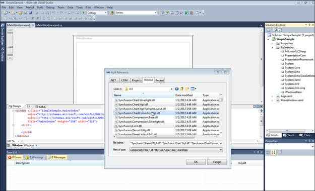
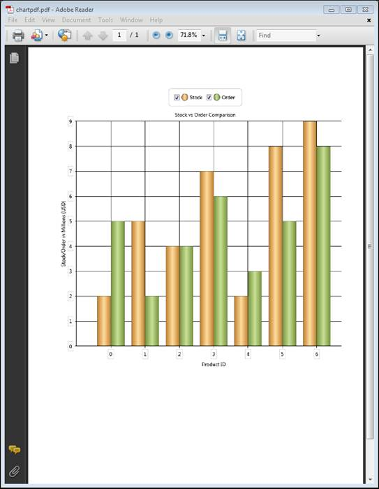

Essential Chart for WPF now comes with the support to export the chart to a PDF file; this conversion can be done using the Syncfusion.ChartConversion.WPF assembly.
Methods
|
Method |
Description |
Parameters |
Type |
Return Type |
|
ChartPdfConverter
|
Converts chart to PDF file. |
Chart, Filename |
Chart String |
Void |
Sample Link
1. Open the WPF sample browser
2. Select the Chart product
3. Select Chart > Export and Import > Chart to PDF
Adding Support to Convert a Chart to PDF to an Application
The following steps explain how to convert a chart to PDF.
1. Create a new Visual Studio 2010 or 2008 project.
2. Add the following assemblies to the project:
Syncfusion.Chart.WPF.dll
Syncfusion.ChartConverter.WPF.dll

Figure 268: Adding Syncfusion Assemblies
3. Create a chart to be exported to PDF.
4. Use the following code to convert the chart to a PDF file.
|
[C#] ChartPdfConverterControl control = new ChartPdfConverterControl(); control.ChartPdfConverter(Chart1, "chartpdf.pdf");
|
5. The PDF file is generated as shown below.

Figure 269: Chart Converted to PDF